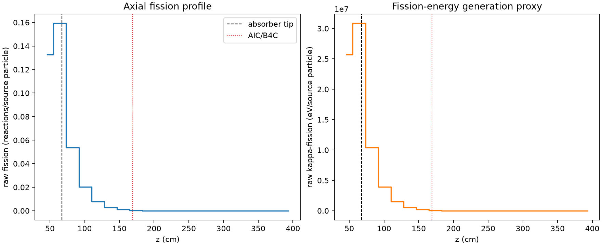
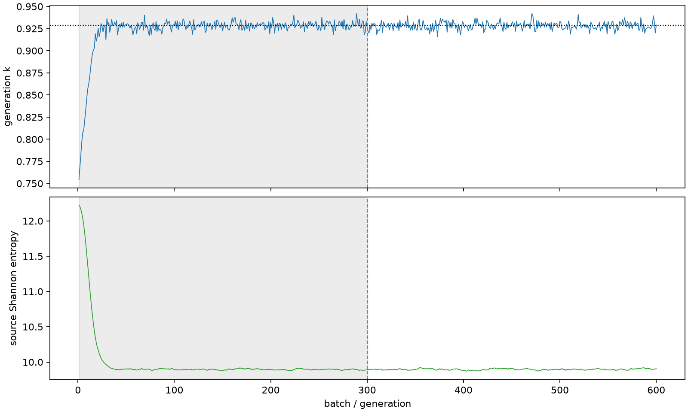

| field | value |
|---|---|
| experiment | V2-STAGE_128_OGRENCI_04-0009 |
| k | 0.9285477278965669 |
| MC standard error | 0.0001865218729128662 |
| seconds | 916.2574500350001 |
| acceptance | not_assessed |
| convergence | review_required |
Completed is output integrity only; physical and statistical review required. Zero tallies do not prove zero production or zero uncertainty.
| diagnostic | value |
|---|---|
| geometric fuel voxels | 5280 |
| zero fission tally voxels | 943 |
| low signal fuel voxels | 2896 |
| low signal fission share | 0.00014311119127489942 |
| low signal kappa share | 0.00014315542338143184 |
| important fission share | 0.9501402549484067 |
| previous filter included | 2384 |
| duration estimate s | 1562.5173488400023 |
| actual minus estimate s | -646.2598988050022 |
| fission relative MC error | statistics |
|---|---|
| all_geometric_fuel | {"voxels": 5280, "positive_mean_voxels": 4337, "zero_mean_voxels": 943, "undefined_relative_error_voxels": 943, "median": 0.1336526085015637, "p95": 1.0, "maximum": 1.0000000000000002} |
| low_signal | {"voxels": 2896, "positive_mean_voxels": 1953, "zero_mean_voxels": 943, "undefined_relative_error_voxels": 943, "median": 0.7060288825807135, "p95": 1.0, "maximum": 1.0000000000000002} |
| important_95pct | {"voxels": 960, "positive_mean_voxels": 960, "zero_mean_voxels": 0, "undefined_relative_error_voxels": 0, "median": 0.004749429784272901, "p95": 0.011038531182411087, "maximum": 0.012060421182217075} |
| outside_previous_filter | {"voxels": 2896, "positive_mean_voxels": 1953, "zero_mean_voxels": 943, "undefined_relative_error_voxels": 943, "median": 0.7060288825807135, "p95": 1.0, "maximum": 1.0000000000000002} |
| kappa_fission relative MC error | statistics |
|---|---|
| all_geometric_fuel | {"voxels": 5280, "positive_mean_voxels": 4337, "zero_mean_voxels": 943, "undefined_relative_error_voxels": 943, "median": 0.13342259028492703, "p95": 1.0, "maximum": 1.0000000000000002} |
| low_signal | {"voxels": 2896, "positive_mean_voxels": 1953, "zero_mean_voxels": 943, "undefined_relative_error_voxels": 943, "median": 0.7059807262328768, "p95": 1.0, "maximum": 1.0000000000000002} |
| important_95pct | {"voxels": 960, "positive_mean_voxels": 960, "zero_mean_voxels": 0, "undefined_relative_error_voxels": 0, "median": 0.004742964927944955, "p95": 0.011019568351027827, "maximum": 0.012042184477408114} |
| outside_previous_filter | {"voxels": 2896, "positive_mean_voxels": 1953, "zero_mean_voxels": 943, "undefined_relative_error_voxels": 943, "median": 0.7059807262328768, "p95": 1.0, "maximum": 1.0000000000000002} |
| axial bin | fission share | kappa-fission share |
|---|---|---|
| 1 | 0.35050610139638255 | 0.35047812159759173 |
| 2 | 0.4209393416877963 | 0.42091429867686597 |
| 3 | 0.14182390983993445 | 0.14185606667478792 |
| 4 | 0.05389095248885606 | 0.053903760757261006 |
| 5 | 0.020653590786093114 | 0.020658533773004077 |
| 6 | 0.007880681598372748 | 0.007882640124350578 |
| 7 | 0.0029282045589549225 | 0.0029289431005418264 |
| 8 | 0.0009483024377696022 | 0.0009485768926777082 |
| 9 | 0.0002857452645831321 | 0.0002858416457330325 |
| 10 | 9.077484735838978e-05 | 9.080912590656752e-05 |
| 11 | 3.236561376897917e-05 | 3.237184935497056e-05 |
| 12 | 9.464722547126175e-06 | 9.4669772601283e-06 |
| 13 | 4.008745038716898e-06 | 4.009827259776877e-06 |
| 14 | 3.240020782610741e-06 | 3.240711400127557e-06 |
| 15 | 1.5328220504728882e-06 | 1.534247242532559e-06 |
| 16 | 8.965731175501288e-07 | 8.971543205944202e-07 |
| 17 | 6.321301585022464e-07 | 6.323390539757005e-07 |
| 18 | 1.493932653606745e-07 | 1.4950771752507834e-07 |
| 19 | 1.0507316941372151e-07 | 1.0501766998306419e-07 |
| 20 | 0.0 | 0.0 |
Histories include the inactive-to-active transition at batch 300. kappa-fission approximates fission energy production, not total heat deposition.

